第21天：把中间代码翻译为汇编指令
第21天：把中间代码翻译为汇编指令
写在前面：终于可以生成汇编了。为了降低难度，我们生成 x86 平台的 32 位汇编程序，验证汇编代码的正确与否用的是 nasm（指令格式是标准的 Intel 语法）.
核心结构体
1 | |
第 2 行的 base_node_t 结构体是为了把指令加入链表。你一定会奇怪，不是用 struct list_head 吗，怎么变成 base_node_t 了？
因为我想尝试不一样的东西，一个链表里面能否加入不同类型的数据？当然可以。
base_node_t 的定义是
1 | |
看看这里面，是不是又有 struct list_head 了？
node_type_e 是枚举类型，用来区分数据类型。
1 | |
目前我就定义了 INTER_INST 和 X86_INST 这 2 个，一个是中间指令，一个是将要生成的 x68 指令.
构造指令并加入链表
1 | |
此函数有 5 个参数：
1、op 是汇编语言的指令助记符（mnemonic）
传参的时候，可用用“mov”,“add”,“push” 等等
2、arg1 是目的操作数
3、arg2 是源操作数
4、label 是汇编语言里面的标签（目前没有用这个字段，传参是 NULL）
5、head 是要加入的链表的头节点。
6~12，判断参数字符串的长度，防止字符串太长造成数组溢出。
第 18 行，指定类型是 X86_INST；
19~28 完成各个参数的字符串拷贝。不用的参数传参 NULL 就行。
第 29 行，list_add_tail(&inst->base.entry, head);把指令加入链表。
要加入的链表的头节点在哪里呢？
1 | |
我在 fun_t 结构体里面增加了第 4 行。
我的设计是 asm_code 里面不但可以加入汇编指令，还可以加入中间指令。在生成 .asm 文件的时候，把中间指令作为注释插入到汇编代码中间，以增强可读性。类似下面这样：
1 | |
汇编指令的结构体里面有 base_node_t base;
但是中间指令的结构体里面没有，现在加上也可以，但是代码很多地方要改。有没有别的办法呢？
有！
之前我们设计了通用链表。现在再升级一下：
1 | |
第 2 行，采用前面定义的 base_node_t
第 3 行，依然是要加入数据的地址。
不管是什么类型的数据，都可以用下面的函数把这个数据的地址加入到链表中。
1 | |
首先分配内存，然后填写 new->addr，再填写 new->base.type，最后把节点加入链表。
还可以再包一层，省略掉 type 这个参数：
1 | |
这个就是把中间指令加入链表的函数。第 3 行，第二个参数指定了数据的类型是 INTER_INST；
链表的遍历
现在的链表是一个多类型数据的链表了，遍历也要修改。
举个例子。假设一个函数的 asm_code 链表上已经加入了若干中间指令和汇编指令，现在要打印这些指令。
1 | |
注意，第 11 行，list_for_each_entry 的第一个参数是 base_node_t 类型，为了方便，要求它在不同类型的结构体里面都是第一个成员。
如果用面向对象的眼光来看，base_node_t 相当于是基类，包含它的结构体相当于继承了基类。
第 12 行和第 15 行，先根据 node->type 的值判断数据的类型。
第 13 行和第 16 行，确定类型后，把 node 强制转换为对应的类型，然后就可以操作各种类型的数据了。
如果 base_node_t 类型不是结构体里面的第一个成员怎么办，也可以，就是要用 container_of 转换一下，这里不赘述，留给读者练习。
如何翻译
所谓翻译，就是把我们生成的中间代码，翻译成汇编代码。一条中间代码对应一条或者多条汇编代码。
我们的中间指令,inter_inst_t 结构体如下：
1 | |
除了一些特殊的指令，大多数指令都是 “result = arg1 op arg2” 这种格式。
也有单操作数的，例如 “result = op arg1”
其中 arg1,arg2,result 都是变量或者常量，用 var_t 表示。
请看下面的代码。
1 | |
我们要计算 c 的值。从汇编语言的角度看，步骤如下：
1、把变量 a 的值送入寄存器 eax（当然也可以是别的寄存器）
2、把变量 b 的值送入寄存器 ecx（当然也可以是别的寄存器）
3、利用加法指令 add eax, ecx 完成加法运算，结果在寄存器 eax 中
4、把 eax 的值写回变量 a
第 5 行的代码，已经翻译成中间代码了，信息就在 inter_inst_t 结构体中，写成大白话如下：
1 | |
再翻译成汇编语言：
1、把 arg1 送入寄存器 eax
2、把 arg2 送入寄存器 ecx
3、生成加法指令 add eax, ecx
4、把 eax 的值写回变量 result
有读者要问，“把 arg1 送入寄存器”，怎么个送法呢？
“把 eax 的值写回变量 result”，具体怎么做呢？
问得好！
把 arg1 送入寄存器，请问 arg 1 的值在哪里？
arg1 是变量 a,所以我们要搞明白变量 a 在哪里。
这要分情况。如果 a 是全局变量，它的空间就在数据段。例如 a 是 int 类型的变量，初始值为 100，那么我们要先生成这样的代码：
1 | |
把 a 的值送入寄存器，要这样写汇编：
mov eax, [a]
是的，在 C 语言中，a 是变量的名字；到了汇编语言，a 摇身一变成为了变量的地址。在汇编语言中，方括号[]表示访问内存。
如果 a 是局部变量，那上面的代码就不需要了。a 在哪里呢，a 在它所属的函数开辟的栈上。假如编译器为 a 分配的内存地址是 ebp-4,要这样写汇编：
mov eax, [ebp-4]
如何送进寄存器说完了，下面看看如何从寄存器写回内存。
执行完 add eax, ecx 后，结果在 eax 中，我们要把 eax 的值写回到变量 c 的内存。
如果 c 是全局变量，那肯定要生成类似上面的 “global c”等数据段的代码
mov [c], eax
如果 c 是局部变量， 假如编译器为 a 分配的内存地址是 ebp-12,要这样写汇编：
mov [ebp-12], eax
以上仅仅是 a 和 c 作为整型变量的情况，如果 a 是字符串呢？是指针呢？不用着急，后面会一一说明。
好了，把中间代码翻译为汇编代码的通用步骤是：
1、把 arg1 送入寄存器 eax
2、如果有第二个操作数 arg2，把它送入寄存器 ecx
3、选择合适的汇编指令，完成计算，假设结果在 eax 中
4、把 eax 的值写回变量 result
以上，把变量的值送入寄存器，把寄存器的值写回变量，基本上每个指令都需要，所以我们先封装几个函数。
加载变量到寄存器
代码略微长，我们一点一点来。
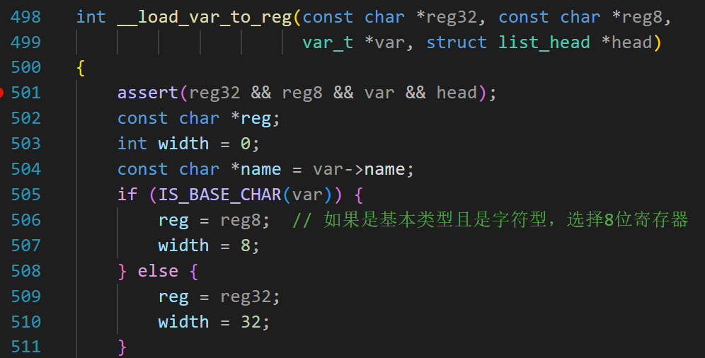
此函数有 4 个参数，第一个是 32 位的寄存器，一般是 “eax” 或者 “ecx”
第二个是 8 位寄存器，一般是 “al” 或者 “cl”
第三个是要加载的变量的地址，一般是 inter_inst_t 的 arg1 或者 arg2 字段；
第四个是链表的头节点的地址；
第 505 行，判断变量是不是 char 类型，如果是，选择 8 位寄存器，否则选择 32 位的寄存器；
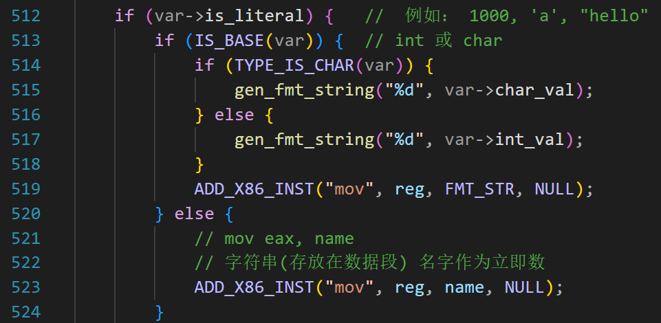
第 512 行，处理常量。使用形如
mov eax, 100 // 整型
mov al, 96 // 字符类型
如果是字符串，要把字符串的首地址（或者说名字）送入寄存器。
前面我们已经生成了字符串表，为每个字符串都指定了唯一的名字，例如代码
char *pstr = “hello world”;
“hello world” 这个字符串在被加入符号表的时候，生成了一个唯一的名字，例如 @str160
如果要在汇编代码里面使用这个字符串，首先要生成
@str160 db "Hello world", 0
@str160 是 “hello world” 在符号表中的名字，在汇编代码中就是字符串的首地址。
1 | |
以上是把中间代码翻译成大白话。
对于赋值操作，比加法操作还简单，就是 2 个步骤
1、把 arg1 加载到寄存器 eax 或者 al
2、把 eax 或者 al 的值写入 result
对于1，就是 mov eax, @str160 // 把字符串的起始地址送入寄存器eax
对于2，就是 mov [ebp-104], eax // 假设 pstr 是一个局部变量，类型是指向字符的指针，其内存地址是 ebp-104；
把字符串的首地址写入 pstr 变量对应的内存，这样 pstr 的值就是字符串的首地址，翻译成 C 语言就是 pstr 指向了字符串。
我们继续看代码：
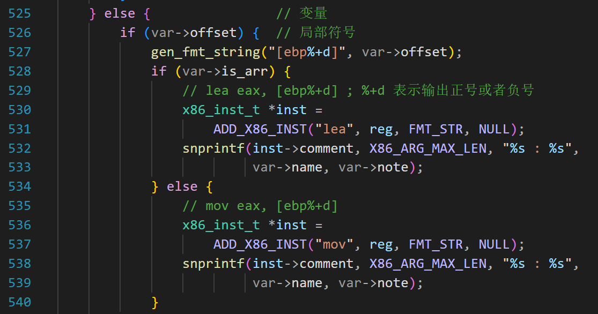
上面才把常量的情况说完，下面该变量了。
变量分为局部变量和全局变量，我们先考虑局部变量。
第 527，根据局部变量的地址，准备源操作数，形如“[ebp-100]”
gen_fmt_string 代码如下，其实是调用 vsnprintf 把字符串写入一个全局的数组。
1 | |
第 536~537 行，生成形如 “mov eax, [ebp-100]” 的指令。第 532 是为这个指令添加注释，不是重点。
再看第 528，如果变量是数组呢？C 语言中，没有把一个数组整体赋值给另一个数组的用法，只能把数组的地址赋值给一个指针。
所以，我们需要取得数组的地址；如何做呢？
假设数组的地址是 ebp-124
可以用 lea 这个指令：
lea eax, [ebp-124]
注意，这条指令的意思是把 “ebp-124” 的值直接复制到 eax，并不访问 “ebp-124” 指向的内存。
第 531 行，利用 lea 指令得到数组的地址，其实是数组首个元素的地址；
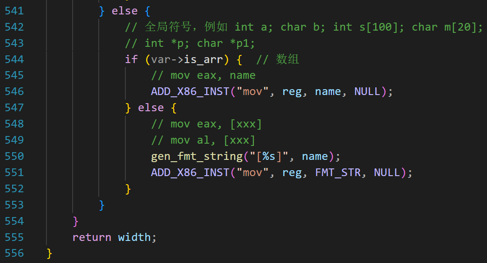
以上是最后一段代码，处理全局变量。
依然是数组和普通变量两种情况。假设代码是
1 | |
生成的汇编是这样的：
1 | |
c 语言中的数组名和变量名，在汇编代码里面都变成了地址。
所以，加载全局变量 monkey 到寄存器 eax，应该写 mov eax, [monkey]
前面已经说了，C 语言中，没有把一个数组整体赋值给另一个数组的用法，只能把数组的地址赋值给一个指针。
对于 i_arr 这种全局的数组，其地址就是数组的名字，应该写 mov eax, i_arr
把寄存器写入变量
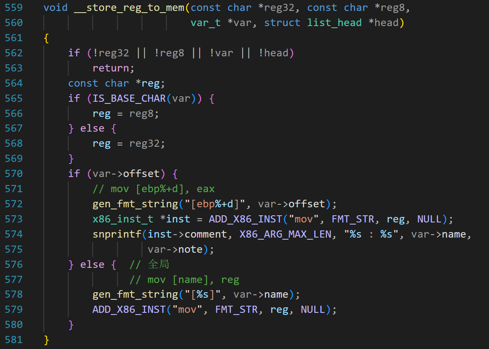
把寄存器写回变量比较简单，只要区分局部变量和全局变量就可以。
写入局部变量，类似于 mov [ebp-20], eax
写入全局变量，类似于 mov [monkey], eax
把变量的地址加载到寄存器
1 | |
只有一种情况会使用这个函数，
就是翻译中间指令 IR_OP_LEA；
例如下面的代码：
1 | |
如第 5 行，如果是全局变量，就把名字送入寄存器。
如第 6 行，如果是局部变量，就用前面讲过的 lea 指令；
上面三个函数，又封装成了三个带参数的宏，这样可以少写一个 head 参数
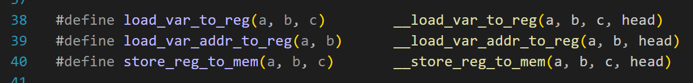
1 | |
同理，把 new_x86_inst 封装成 ADD_X86_INST 这个宏。
轮子造好了，下面我们针对每种中间指令，逐一讲解代码。
函数 to_intel_32_asm
标号
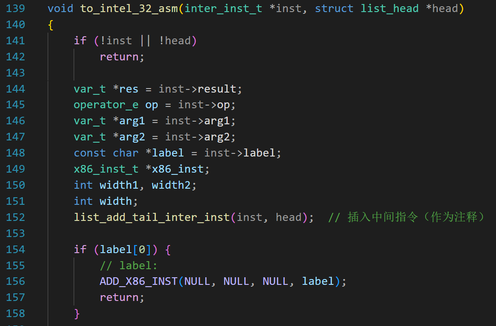
144~148，取得中间指令的每个字段。
第 156，把中间指令的标签翻译成汇编指令，其实谈不上翻译，就是字符串拷贝。
函数入口和出口
首先，我们要了解发生函数调用的时候，栈是如何变化的。
例如下面的代码
1 | |
在调用 add 函数之前，栈是这样的：
每一行表示4个字节
1 | |
1、main 准备参数
按照 cdecl 约定，参数从右到左压栈：
1 | |
压栈用的汇编代码是
1 | |
2、call
汇编代码是call add
利用 call 指令发起函数调用
call 指令会把返回地址压栈；返回地址就是 “call add” 这句指令的下一条指令的地址
1 | |
然后，就跳转到了被调用的函数。
3、被调用函数开头的代码一般如下面
1 | |
这三行代码我们一行一行看，首先是 push ebp
栈变化为这样：
1 | |
push epb 是为了把 caller 的 epb 存起来(为了将来恢复它的值)，因为被调用函数会设置自己的 ebp，并用它来寻址
mov ebp, esp
这句执行完后，EBP 和 ESP 指向同一个位置
1 | |
再然后，被调用函数会根据局部变量对内存的消耗情况调整 esp 的值。假设用了 2 个整型变量，那么栈布局如下：
1 | |
所以，根据这个图，要访问传入的参数 a 和 b，应该用 ebp+8, ebp+12 寻址
要访问局部变量 1 和 2，应该用 ebp-4, ebp-8 寻址。
总结，如何生成函数开头的汇编代码：
1 | |
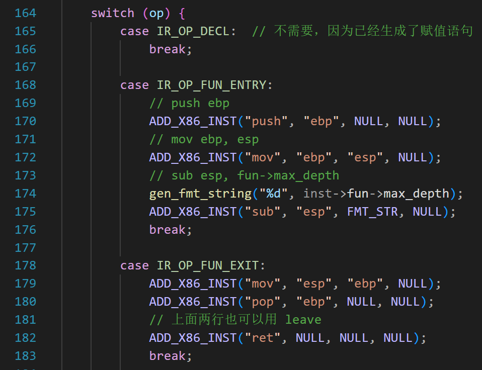
了解了以上知识，我们看代码，168~175 就是为了生成函数开头的代码。
第 175 行，在给局部变量分配内存地址的时候，fun->max_depth 保存了栈的最大深度，这个值就是被调用函数对栈的最大消耗。
第 179~182，生成函数末尾的代码。
当被调用函数执行到末尾的时候，会执行下面的代码
1 | |
这三句我们一句一句看。
首先，mov esp, ebp
1 | |
esp 向上调整，越过局部变量，相当于释放了局部变量
“pop ebp”
1 | |
此时，ebp 的值又恢复了（具体指向哪里图上没有画出来）
最后是 ret 指令，这个指令的本质是 pop eip
1 | |
就是把栈上的返回地址弹出给 eip,于是 cpu 就跳转到返回地址开始执行指令。
对于调用者，要调整 esp,例如 add esp, 8
释放参数占用的内存。
1 | |
函数调用
我们趁热打铁，把函数调用也看了。
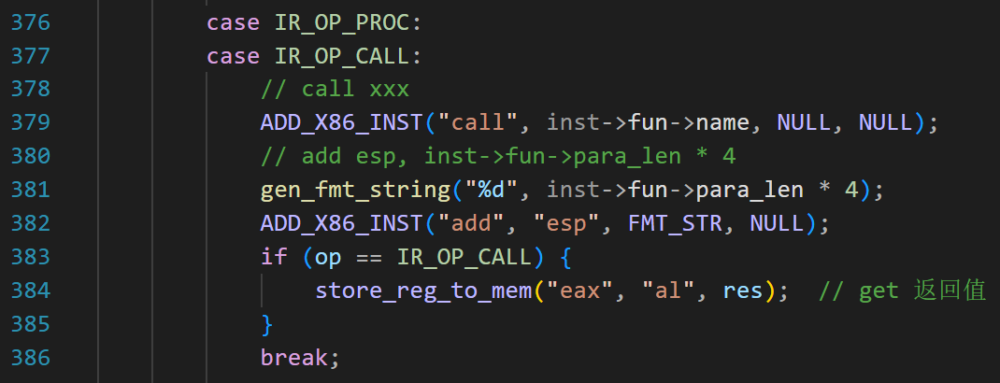
第 379 行，生成 call xxx 指令。xxx 是函数的名字。
第 381 行，根据函数参数的个数，构造字符串，因为一个参数占用 4 个字节（char 类型也用 4 个字节传递），所以是乘以 4,假设结果是 yyy；
第 382 行，生成指令 add esp，yyy
第 384 行，如果是带有返回值的函数调用，还需要把返回值（被调函数已经把返回值送到了 al 或者 eax 中）写入变量 res;
参数传递
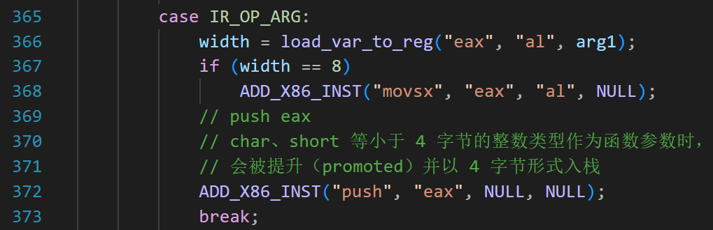
第 366 行，加载参数到寄存器
第 368 行，因为 char 等小于 4 字节的类型作为参数，会被提升到 4 个字节，所以需要做带符号扩展。
movsx eax, al 的意思是把 al 的值带符号扩展到 eax 寄存器。
有人问被调函数如何拿到这个参数，被调函数会用 ebp+8 寻址，类似：
mov eax, [ebp+8]
但是只使用 eax 的低 8 位，或者
mov al, byte [ebp+8]
赋值
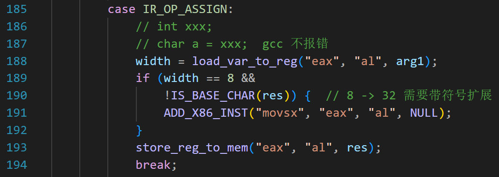
第 188 行，加载 arg1 到寄存器；
第 189 行，如果参数是字符类型，但是结果不是字符类型，则作带符号扩展
第 193 行，把寄存器的值写回到变量。
因为基本上每个指令都有 load_var_to_reg 和 store_reg_to_mem 的操作，后面不再逐一解释。
加、减、乘
首先要说明，我们的编译器支持的整数都是有符号数。
在 C 语言中，整型提升（Integer Promotion）是表达式求值过程中自动发生的隐式类型转换规则，目的是将小整数类型（如 char、short）转换为至少 int 大小的类型，以便 CPU 能高效、安全地执行算术运算。
请看下面的代码：
1 | |
但是我发现 gcc 并不是这样做的。举个例子：
1 | |
按理说，应该对 x1 做带符号扩展，然后把它和 x2 相加；
再然后，把相加的结果截断，也就是仅保留低 8 位，赋值给 x3;
不过 gcc 针对上面的代码生成的汇编如下（不开启优化）：
1 | |
在这种“先扩展、再运算、最后截断”的模式下，不管是使用 movsx 还是使用 movzx 对 x1 做扩展，得到的结果是一样的，因为最后都会截断，仅保留低8位。即使做 movsx 扩展，高位出现了一连串的 1，参与运算后的结果也会扔掉。
举个例子会更值观：
x1 = -1 , -1用二进制表示是 0xFF
x2 = 3,3用二进制表示为 0x00000003
第一种情况：x1 符号扩展为 0xFFFFFFFF
两个数相加得 0x00000002
截断高24位，得 x3 = 2
第二种情况：x1 做零扩展为 0x000000FF
x2 = 3, 依然是 0x00000003
两个数相加得 0x00000102
截断高24位，得 x3 = 2
你瞧，结果是一样的。之所以一样是因为本质上是对 0x03 和 0xFF 相加，高24位是什么不重要。
笔者认为，**GCC选择零扩展的原因 (当char默认有符号时)**可能是确保高位不会因为符号位填充而出现一连串的 1，从而让运算过程更加直观（反正高位不使用，填充 0 很合理），避免产生不必要的负数中间值。
讨论完上面的内容，可以看代码了。我们也模仿 gcc 的做法，当结果变量是字符类型的时候，如果遇到字符类型的加数，作零扩展，否则作带符号扩展。
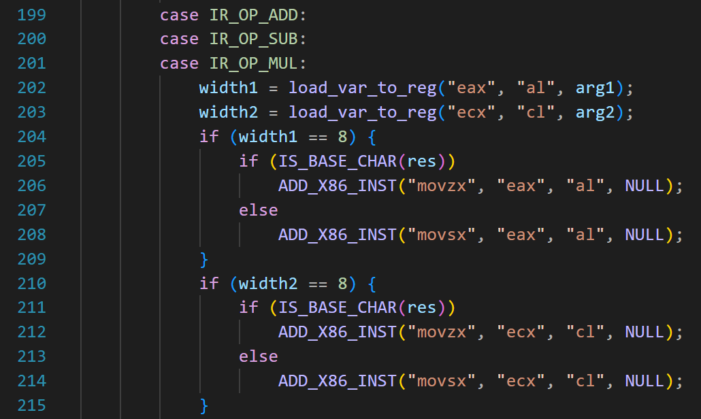
如果两个加数都是整型，那就不用扩展了。
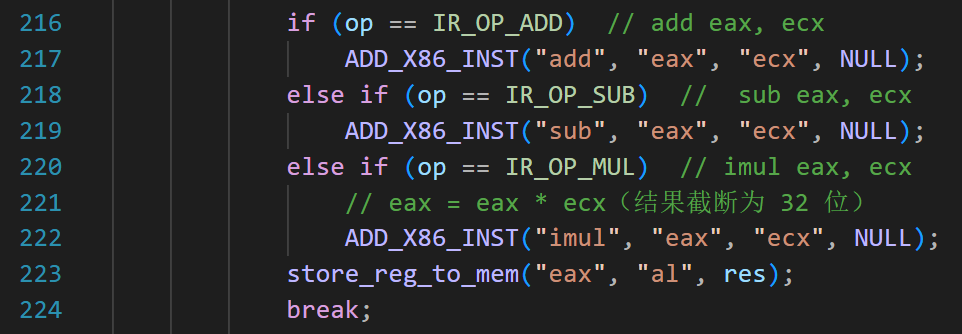
不管是加法、减法还是乘法，道理都一样，无非是指令不一样，分别是 add,sub,imul
imul 是乘法指令，它有多种格式，这里我们选择双寄存器的格式；因为我们的编译器不支持 64 位的类型，所以若计算结果超过 32 位，只能截断。
除法和求余
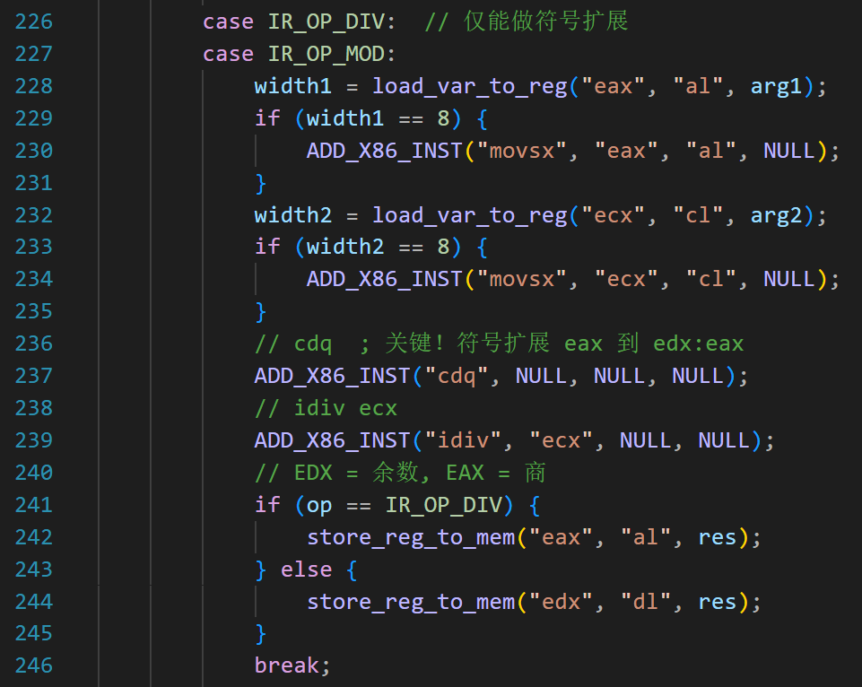
和加减乘不同，对于除法，必须作带符号的扩展。因为除法可以看成是向右移位，高位的 1 会移动到低位，所以带符号扩展和不带符号扩展的结果完全不一样。
举个简单的例子，
char x1 = -4;
char x2 = x1 / 2;
-4 = 0xFC,如果作零扩展，就是 0x000000FC， 0x000000FC/2 = 0x7E = 126
如果作符号扩展，就是 0xFFFFFFFC, 0xFFFFFFFC/2 = 0xFFFFFFFE = -2
idiv 指令的格式如下表
| 操作数大小 | 被除数位置 | 除数（操作数） | 商 | 余数 |
|---|---|---|---|---|
| 8 位 | AX |
r/m8 |
AL |
AH |
| 16 位 | DX:AX |
r/m16 |
AX |
DX |
| 32 位 | EDX:EAX |
r/m32 |
EAX |
EDX |
| 64 位 | RDX:RAX |
r/m64 |
RAX |
RDX |
- 被除数必须是操作数宽度的两倍
- 高半部分放
DX/EDX/RDX，低半部分放AX/EAX/RAX
我们选择 32 位的除法，除数用寄存器 ecx
所以，如果 arg1 或 arg2 不是32位，先带符号扩展到32位（228~235行）
此时，被除数就在 eax 中，除数在 ecx 中
但是没有完，因为被除数必须是 edx:eax,所以要把 eax 带符号扩展到 edx
这个操作可以用 cqd 指令。
cqd 指令，全称是Convert Doubleword to Quadword
功能是将 EAX 的符号位扩展到 EDX
所以第 237 行，插入cdq 指令。
还有，edx:eax / ecx，商在 eax 中，余数（符号与被除数相同）在 edx 中。所以有代码 241~245.
取负
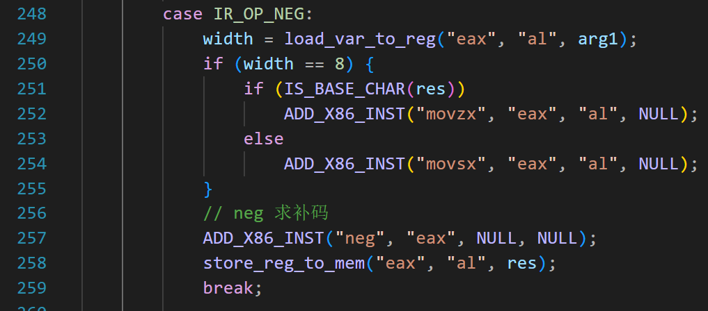
neg 是 x86 汇编中用于对操作数取负的指令，它在底层通过按位取反再加一实现。
代码很简单，首先完成扩展（如果 arg1 是32位就不用扩展了）
第 257 行插入 neg 指令，它只需要一个操作数。
有符号比较
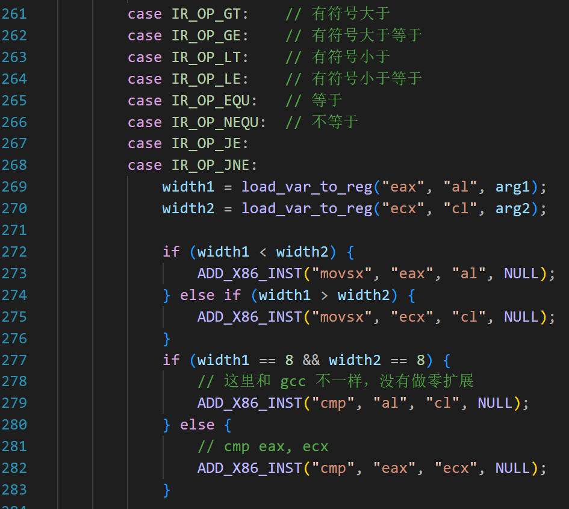
第269~270,把 arg1 和 arg2 加载到寄存器，并获得位宽。
272~276，如果宽度不一致，则对小整数做带符号扩展。
第 277~279，如果都是字符类型，用 cmp al, cl 做比较
否则，用 cmp eax, ecx
顺便提一下，当 CPU 执行 CMP A, B 时，它内部的算术逻辑单元（ALU）会计算 A - B 的值。
- 关键点：这个减法的结果不会写回到目标寄存器 A 中。
- 目的：执行减法的唯一目的，是为了根据计算结果更新标志寄存器（EFLAGS）。
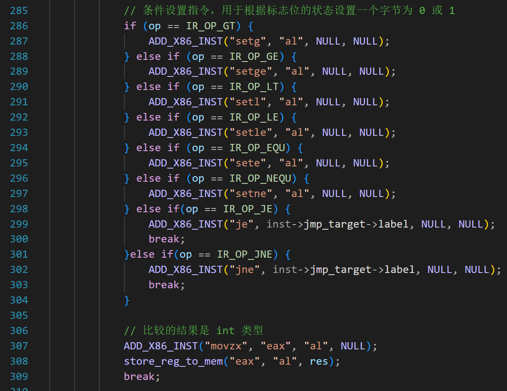
setg、setge、setl、setle 等属于条件设置指令（Set Byte on Condition）
属于 SETcc 指令家族。它们根据 CPU 标志位（EFLAGS/RFLAGS）将目标操作数设为 0 或 1
注意：操作数必须是 8 位（寄存器如 al、bl，或内存操作数）
有符号整数比较
| 指令 | 含义 | 条件 | 标志位 | C语言对应 |
|---|---|---|---|---|
setg |
Greater | 大于 | ZF=0 and SF=OF | a > b |
setge |
Greater or Equal | 大于等于 | SF=OF | a >= b |
setl |
Less | 小于 | SF≠OF | a < b |
setle |
Less or Equal | 小于等于 | ZF=1 or SF≠OF | a <= b |
例如：
1 | |
286~297，用 SETcc al, 得到比较结果
298~304，中间指令 IR_OP_JE 和 IR_OP_JNE 根据 arg1 和 arg2 是否相等决定要不要跳转，也需要比较 arg1 和 arg2，所以和比较指令放在一起。
299 和 302 插入 je 或者 jne,意思是相等则跳转或不等则跳转。
C 语言标准明确定义，无论操作数是什么类型（char、short、int、long、指针等），比较表达式的结果始终是 int 类型的值：0（假）或 1（真）。
所以第 307 行，把结果做零扩展（模仿 gcc 的做法），扩展到 32 位。
逻辑非
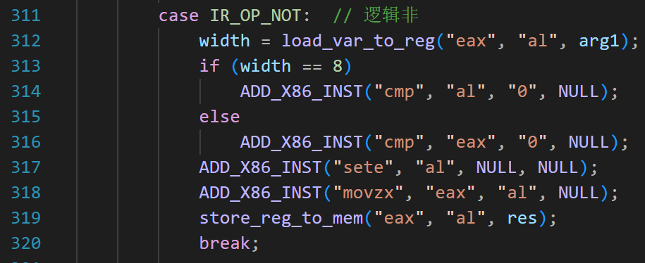
把操作数和 0 比较，再配合 sete指令，就可以实现逻辑非。
举个例子，
1 | |
如果 eax 是 0，那么 al 就是 1
如果 eax 不是 0，比较结果不相等，al 就是 0
可以看到，eax 的逻辑非就是 al
所以，用上面 2 条指令就可以完成逻辑非。
逻辑或
求 a || b，假设 a 和 b 分别加载到 eax 和 ecx 中；
下面的汇编代码就可以实现 a || b
1 | |
第1行，比较 eax 和 0，如果不是 0，那就跳转到 .lb1, 把 1 写入 eax, 再跳转到 .lb3,就完成了。这是因为或运算遵循短路规则，当判断 a 不为 0 的时候，就不需要计算 b 了。
如果 a 等于 0，才需要计算b,也就是第 3 行，比较 ecx 和 0，如果等于 0，跳转到 .lb2, 把 0 写入 eax, 结束。如果 ecx 不等于 0,执行第 6 行，把 1 写入 eax, 再跳转到 .lb3,就完成了。
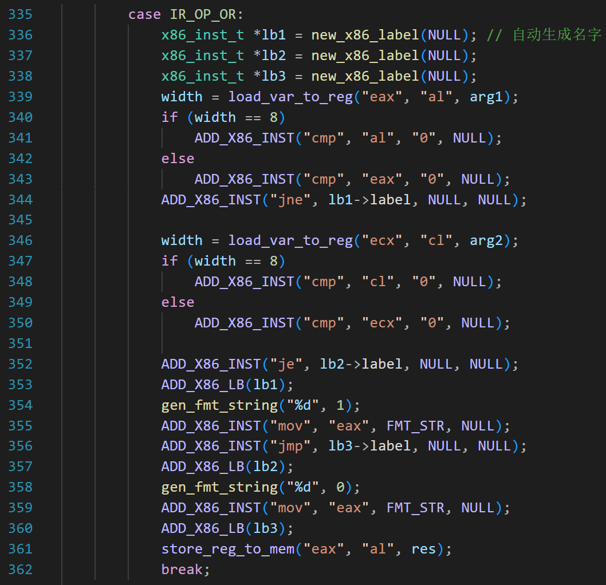
336~338，生成 3 个标签。
339，把 arg1 加载到 al 或者 eax,
340~344,生成比较指令，形如 cmp eax,0
344，生成指令 jne lb1
346~350,把 arg2 加载到 cl 或者 ecx；
352，生成指令 je lb2
第 353 行，插入标签 lb1
355,生成指令 mov eax, 1
356，生成指令 jmp lb3
357,插入标签 lb2
359,生成指令 mov eax, 0
360，插入标签 lb3
最后，把结果 eax 写回 res 变量。
逻辑与
逻辑与和逻辑或类似，汇编代码如下：
1 | |
如果 eax 是 0，那就跳转到 .L4, 给 eax 写 0，符合逻辑与的短路规则，当第一个操作数是 0 的时候，后面的不用看。
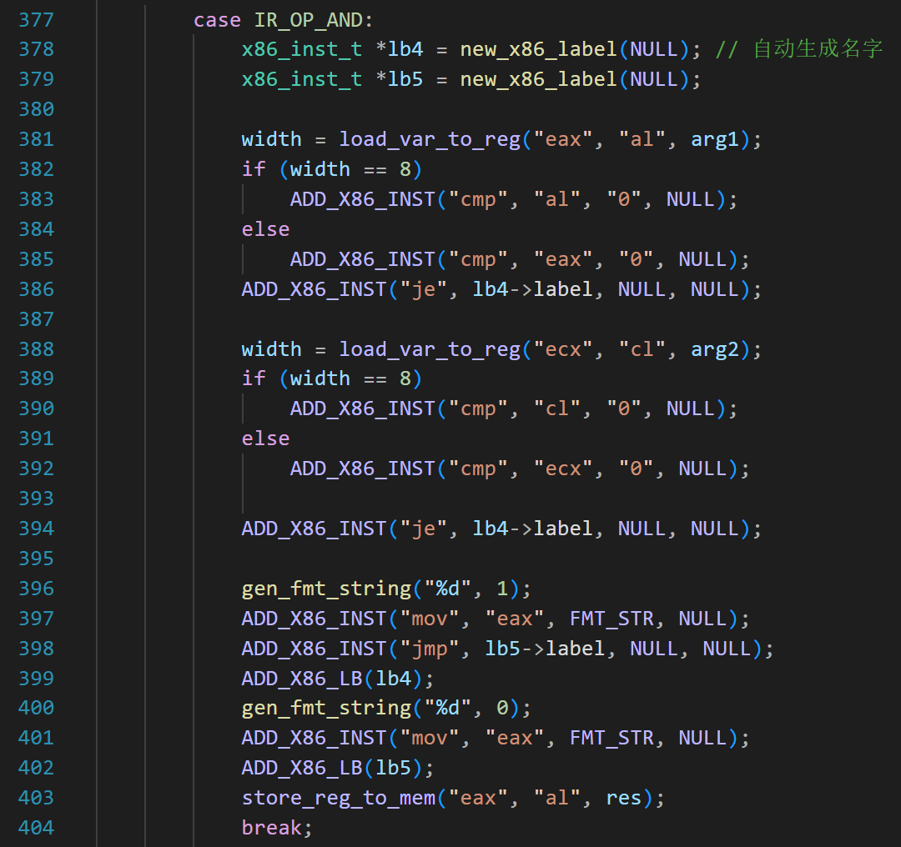
代码就不一一解释了。
无条件跳转、真跳转、假跳转
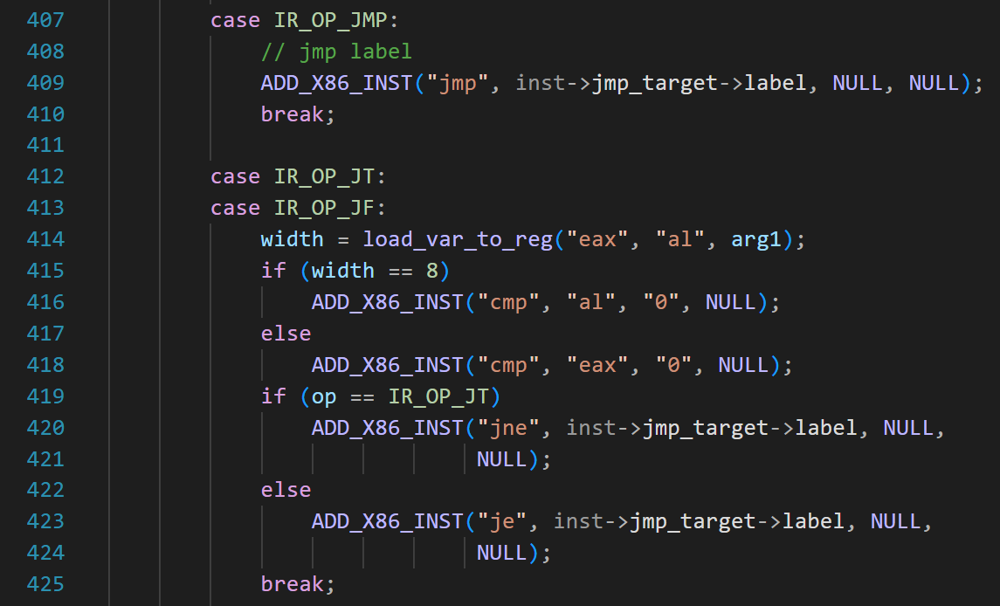
第 409 行，无条件跳转，很简单。翻译成汇编是 jmp xxx
所谓真跳转，意思是 eax/al 的值为真就跳转;
假跳转，意思是 eax/al 的值为假就跳转;
比较 eax/al 和 0，等于 0，说明是假，用 je 指令实现假跳转；
同理，不等于 0，说明是真，用 jne 实现真跳转。
返回
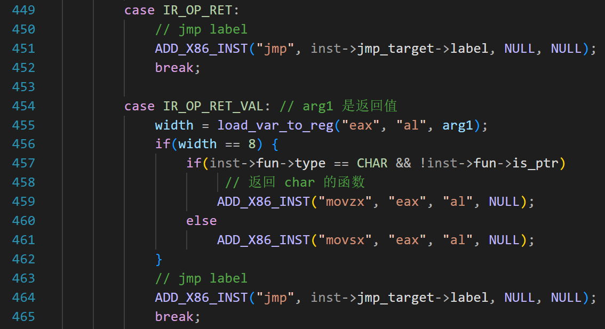
第 449 表示没有返回值的返回，就是 return;
这种情况很简单，直接跳转到某个标签。
第 454 行，表示带有返回值的，例如 return x;
在生成中间代码的时候，我们为每个函数都生成了一个 return 标号，位于函数的末尾。
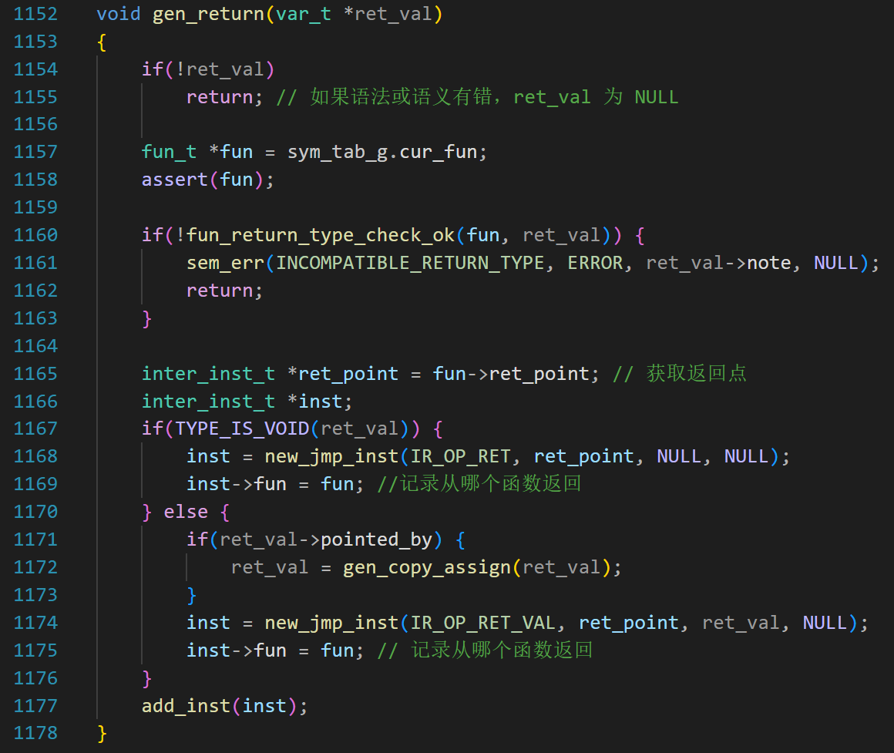
第 1168 行，第 1174 行，在创建 IR_OP_RET 和 IR_OP_RET_VAL，已经把这个 return 标号设置到了 inst->jmp_target 字段。
所以 inst->jmp_target->label 就是跳转的标号。
根据 cdecl 调用约定，函数返回值用 eax 传递。
1 | |
如果返回值是 char 类型且函数声明的返回值也是 char，则把 al 零扩展到 eax，这样做是为了安全。
如果返回值是 char 类型，但是函数声明的返回值类型是 int，则把 al 带符号扩展到 eax.
取地址
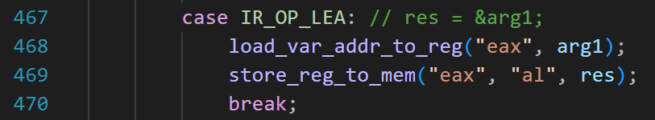
第 468 行其实就是前面讲过的 __load_var_addr_to_reg 函数，用于把变量的地址加载到寄存器。
IR_OP_STORE
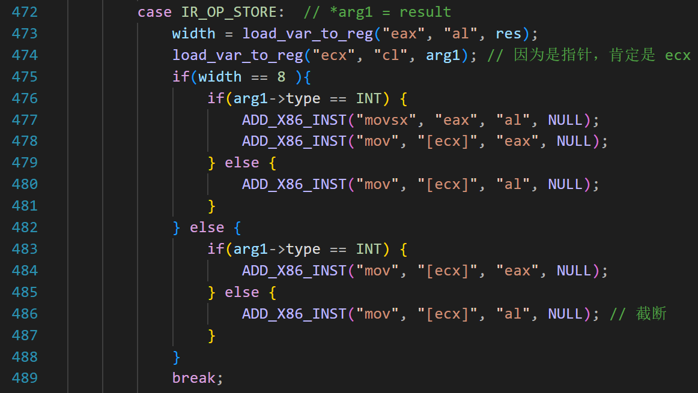
第 473 行，把 res 加载到 eax 或者 al
第 474，把 arg1 加载到 ecx，这是一个地址
如果 res 是 char 类型且 arg1 是 int * 类型，则先把 al 做带符号扩展（第 477 行）；然后把 eax 写入 ecx 指向的内存（第 478 行）
如果 res 是 char 类型且 arg1 是 char * 类型，则指向第 480 行，把 al 写入ecx 指向的内存
如果 res 是 int 类型且 arg1 是 int * 类型，则把 eax 写入 ecx 指向的内存（第 484 行）
如果 res 是 int 类型且 arg1 是 char * 类型，则把 al 写入ecx 指向的内存，相当于截断 res 的高 24 位。
IR_OP_LOAD
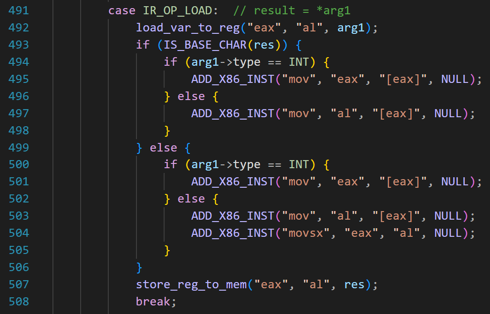
此操作是把指针 arg1 指向的内容存入 res
第 492 行，把指针 arg1 加载到寄存器 eax
和上面一样，分四种情况。
如果 res 是 char 类型且 arg1 是 int * 类型，第 495 行构造汇编指令“mov eax, [eax]” 此时 eax 里面是 int 类型的值。在执行第 507 行的时候，会根据 res 是 char 类型而选择使用 al 寄存器，忽略高 24 位；
如果 res 是 char 类型且 arg1 是 char * 类型，第 497 行，构造汇编指令“mov al, [eax]”
如果 res 是 int 类型且 arg1 是 int * 类型,第 501 行，构造汇编指令 “mov eax, [eax]”
如果 res 是 int 类型且 arg1 是 char * 类型，第 503 行，先做 “mov al, [eax]”，再做 “movsx eax, al”,把 al 有符号扩展到 eax
到这里，中间指令的翻译就讲完了。
但是这离生成汇编代码还有差距，差距在哪里呢？
如何生成字符串表？如何生成数据段？
我们下节课学习。